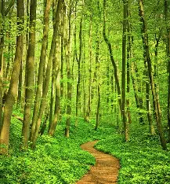
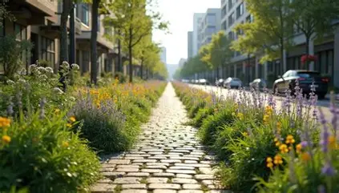
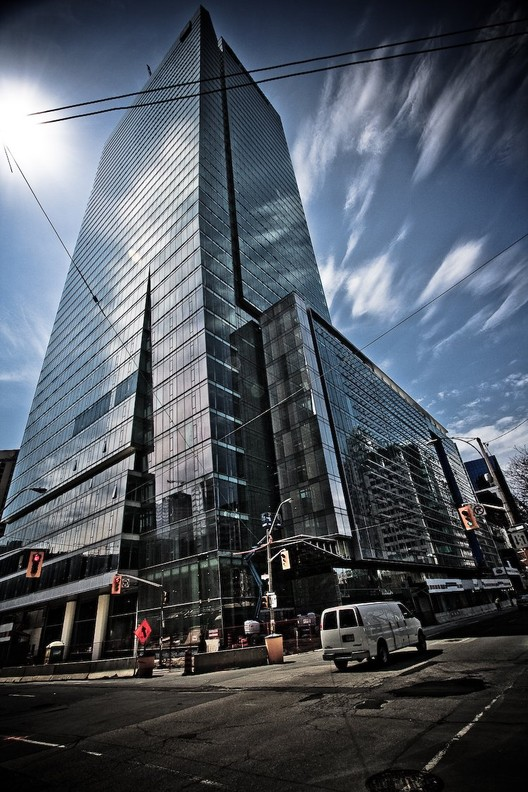
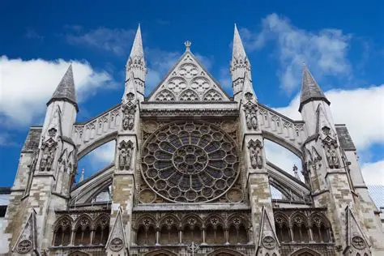
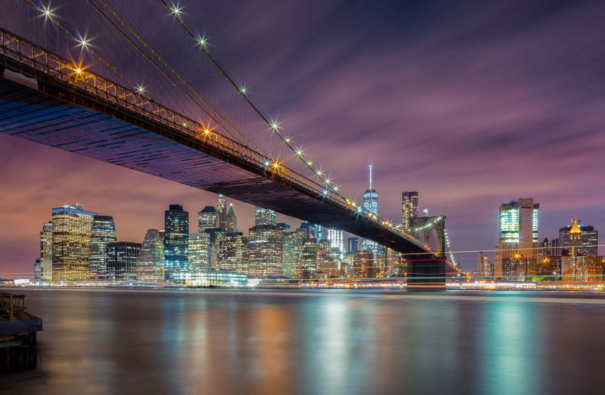

The highest mountain on Earth is Mount Everest, with an elevation of 8,849 meters (29,032 feet) above sea level.
Mountain view

LandscapeA forest path typically meanders through dense woods, often lined with tall trees, wildflowers, or moss-covered ground.
Forest path
A beach sunset is more than a scenic view, it carries layered symbolic meaning, blending natural beauty with emotional resonance.
Beach sunset view
Lakes lie completely on land and are separate from the ocean.
Lake view
The purpose of a studio shoot is to create images in a controlled indoor environment where every element can be managed.
Studio

PortraitsA street path generally refers to a defined route or way that connects two points, used for travel by people or vehicles.
Street path
Older adults are like living links to the past.
Old man
Photos capture moments of joy, love, and belonging, while also reminding viewers of life's impermanence.
Smiling person

ArchitectureBuilding landmarks showcasing diverse styles, cultural significance, and historical importance worldwide.
Building

ArchitectureChurches developed from simple meeting spaces into monumental structures that shaped towns and cities.
Historic church
Modern homes today blend aesthetics, function, and sustainability.
Modern house

ArchitectureBridge architecture combines engineering, materials science, and aesthetics to create safe structures.